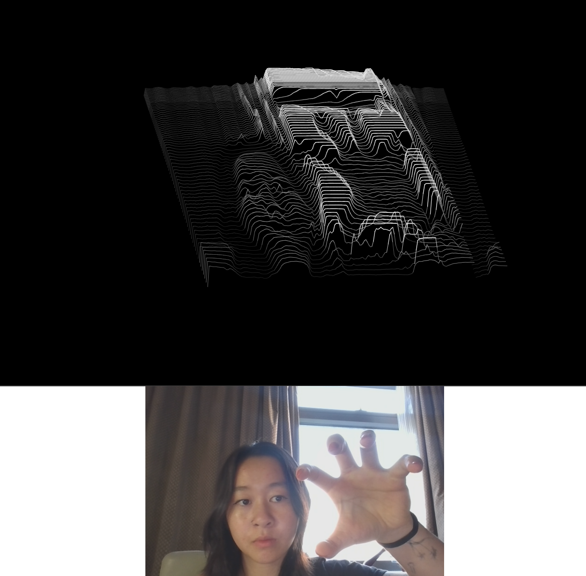
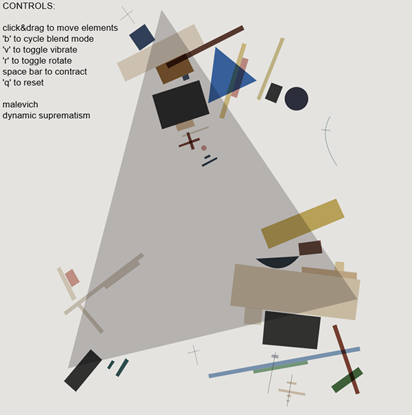
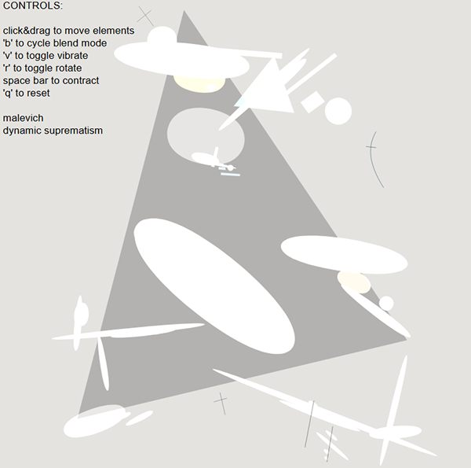
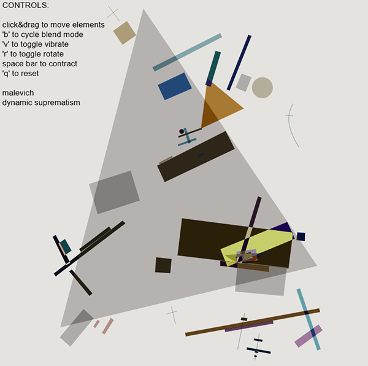
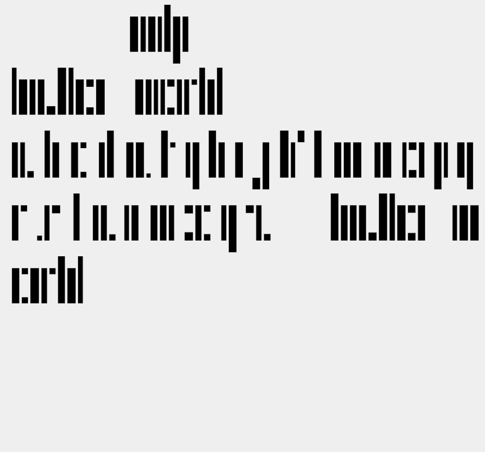
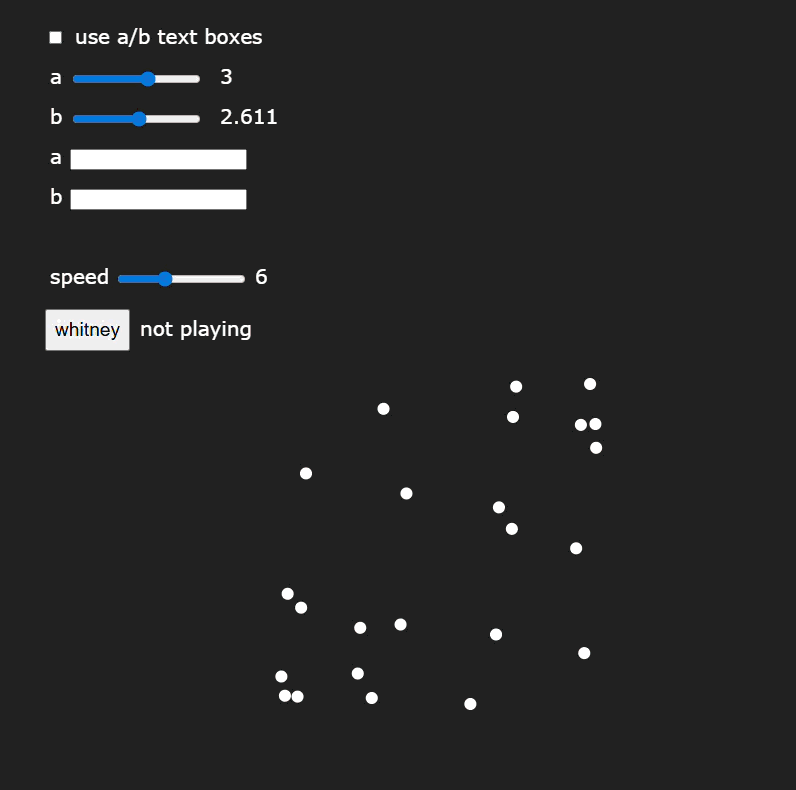

Sketches++
Independent Project
Spring 2025
Spring 2025
Creative Coding
[Note: this project page is a work in progress, and I'm working on adding more details]
Sketches++ is a series of mini creative coding explorations I made in the spring, inspired by and drawing from the work of historical figures in the computational art world. By recreating and reimagining their work, I hope to both pay homage to their innovations and investigate how technology shapes and dictates the limits of artistic expression.
Sketches++ is a series of mini creative coding explorations I made in the spring, inspired by and drawing from the work of historical figures in the computational art world. By recreating and reimagining their work, I hope to both pay homage to their innovations and investigate how technology shapes and dictates the limits of artistic expression.


A recreation of Kazimir Malevich's painting Dynamic Suprematism using paper.js, with added interactivity & animations
Link
Link





TO BE ADDED SOON: reimaginings of Anni Albers, Jason Salavon, Ken Knowlton, and Vera Molnar